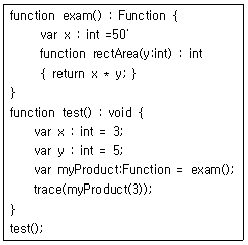
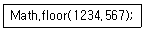
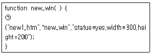
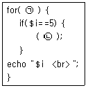
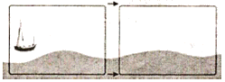

멀티미디어콘텐츠제작전문가(구) (2011-08-21 기출문제)
1과목: 멀티미디어개론
1. 인터넷 아키텍처와 관련된 문제들을 협의하고 조정하는 국제 기구로 IETF와 IRTF를 산하기구로 두고 있는 기관은?
- IAB(Internet Architecture Board)
- ISOC(Internet Society)
- NIC(National Information Center)
- ITU(International Telecommunication Union)
(정답률: 알수없음)

2. IPv6에 대한 설명으로 거리가 가장 먼 것은?
- 주소의 길이는 128비트이다.
- 새로운 기술이나 응용 분야에 의해 요구되는 프로토콜의 확장을 허용하도록 설계되었다.
- 암호화와 인증 옵션들은 패킷의 신뢰성과 무결성을 제공한다.
- 주소를 보다 읽기 쉽게 하기 위해 8진수 콜론 표기로 규정한다.
(정답률: 알수없음)
3. 프로토콜의 세 가지 요소가 아닌 것은?
- 구문(Syntax)
- 순서(timing)
- 통제(Control)
- 의미(Semantics)
(정답률: 알수없음)
4. 인터넷 웹사이트의 방문기록을 남겨 사용자와 웹사이트 사이를 연결해 주는 정보는?
- 스파이웨어
- 해커
- 쿠키
- 백도어
(정답률: 알수없음)
5. 다음 중 B 클래스에 속하는 IP주소는?
- 200.200.200.1
- 192.200.190.1
- 168.126.63.1
- 244.221.5.1
(정답률: 알수없음)
6. 다음 중 ICMP 패킷을 사용하는 서비스 거부 공격은?
- SYN Flooding
- Land
- Ping of Death
- Teardrop
(정답률: 알수없음)
7. 다음 중 일반적으로 사용하는 네트워크 서비스와 포트번호가 잘 못 연결된 것은?
- DNS : 53
- Telnet : 23
- TFTP : 69
- SMTP : 53
(정답률: 알수없음)
8. 가상현실의 몰입감 중 게임 등에서 많이 사용되었던 방식으로 참여자가 가상세계 안에서 자신의 모습을 보면서 가상세계와 상호작용하는 방식은?
- Third person 방식
- Extensible 3D방식
- On-the-table 방식
- Through-the-window 방식
(정답률: 알수없음)
9. 정보보호를 통해 달성하려고 하는 목표로 가장 거리가 먼 것은?
- 비밀성
- 무결성
- 책임성
- 가용성
(정답률: 알수없음)
10. 스니퍼를 탐지하는 방법으로 가장 거리가 먼 것은?
- UDP를 이용한 방법
- ARP를 이용한 방법
- Ping을 이용한 방법
- DNS를 이용한 방법
(정답률: 알수없음)
11. 전달하려는 기밀 정보를 이미지 및 오디오 파일 등 디지털 매체에 암호화해 숨기는 심층암호 기술은?
- Copyright
- Modulation
- Mondex
- Steganography
(정답률: 알수없음)
12. DNS 스푸핑을 이용하여 공격대상의 신용정보 및 금융정보를 획득하는 사회공학 방법은?
- 서비스 거부 공격
- 트로이 목마
- 파밍
- 스머핑
(정답률: 알수없음)
13. 인터넷을 통해 데이터를 전송할 때 데이터를 패킷 단위로 나누어 전송하고 오류 제어 및 흐름 제어를 제공하는 프로토콜은?
- POP
- TCP
- ICMP
- SMTP
(정답률: 알수없음)
14. FTP에서 파일을 전송할 때 사용하는 데이터 전송 모드가 아닌 것은?
- 스트림 모드
- 블록 모드
- 압축 모드
- 라인 모드
(정답률: 알수없음)
15. 다음 중 UNIX 시스템에 설명으로 거리가 가장 먼 것은?
- 시분할 시스템으로 설계된 운영체제이다.
- 장치 프로세스간 호환성을 줄인 제한적 접근 방식으로 효율성이 높다.
- 다중 사용자 다중 태스킹을 제공한다.
- 트리 구조의 파일 시스템을 가진다.
(정답률: 알수없음)
16. 현재 시스템에 로그인되어 있는 사용자 정보를 확인할 수 있는 리눅스 명령어는?
- man
- mv
- cat
- id
(정답률: 알수없음)
17. JPEG의 압축 효율 개선과 블록화 문제를 해결하고, 웨이블릿 변환 및 적응적 산술코딩을 적용한 정지영상압축 표준은?
- JPEG1000
- JPEG2000
- H.264
- JPEG-EXR
(정답률: 알수없음)
18. 화면의 밝기가 변화할 때 색상이 변동하는 현상으로 특히 화면의 고휘도 부분에서 색이 적절치 않게 재생되는 현상은?
- 휘도 비직선
- 미분위상
- 전압이득
- 색도 비직선
(정답률: 알수없음)
19. 영상내의 색정보, 즉 영상의 크로미넌스(Chrominance) 정보를 그래픽 표시로 나타내는 측정계기는?
- Vector scope
- Waveform monitor
- Color displayer
- Level meter
(정답률: 알수없음)
20. 2개의 음이 동시에 존재할 때, 한쪽 음이 다른 한쪽의 음에 의해 은폐되어 들리지 않는 현상은?
- 바이노럴현상
- 마스킹현상
- 푸리에현상
- 웨이블릿현상
(정답률: 알수없음)
21. 오디오 콘솔의 기능 중 마이크 입력에서 들어오는 미약한 신호를 증폭하기 위한 기기는?
- potentiometer
- post-amplifier
- fader
- preamplifier
(정답률: 알수없음)
22. 모니터의 성능을 평가하는 요소로서 모니터 화면에 나타난 점과 점 사이의 거리를 말하는 것은?
- 도트피치(dot pitch)
- 해상도(resolution)
- 핀쿠션(pin cushion)
- 주파수(frequency)
(정답률: 알수없음)
23. 다음 중 모니터에 관한 설명으로 거리가 가장 먼 것은?
- 활성화율은 초당 화면이 몇 번 디스플레이 되는가를 나타내는 회수이다.
- 높은 활성화율은 깜빡임을 없애 주고 눈을 덜 피로하게 한다.
- 해상도는 단위 영역당 픽셀의 개수를 나타내는 수이다.
- 해상도가 높으면 선명도는 감소하고 스크롤이 필요하다.
(정답률: 알수없음)
24. 44.1[khz]로 샘플링한 CD의 경우 이론적으로 재생할 수 있는 최대 주파수에 가장 근접한 주파수[khz]는?
- 5
- 10
- 13
- 22
(정답률: 알수없음)
25. 다음 중 아날로그 신호를 디지털 신호로 변환 시에 사용되는 과정이 아닌 것은?
- 복호화(decoding)
- 표본화(sampling)
- 양자화(quantization)
- 부호화(coding)
(정답률: 알수없음)
2과목: 멀티미디어기획및디자인
26. 다음 중 디자인의 원리에 해당되지 않는 것은?
- 통일
- 다양
- 균형
- 비례
(정답률: 알수없음)
27. 디자인의 요소로 가장 거리가 먼 것은?
- 형태
- 색
- 재료
- 질감
(정답률: 알수없음)
28. 디자인의 개념 요소와 거리가 먼 것은?
- 점
- 선
- 면
- 리듬
(정답률: 알수없음)
29. 색의 3속성에 대한 설명 중 틀린 것은?
- 색상, 명도, 채도를 말한다.
- 색상을 둥글게 배열한 것을 색상환이라고 한다.
- 순색에 무채색을 섞으면 채도가 높아진다.
- 먼셀 표색계의 무채색 명도는 0~10단계이다.
(정답률: 알수없음)
30. 디자인 조형요소 중 형태의 분류와 거리가 먼 것은?
- 유동 형태
- 자연 형태
- 순수 형태
- 인위적 형태
(정답률: 알수없음)
31. 실용성 또는 기능성과 관련되는 디자인의 조건은?
- 심미성
- 독창성
- 합목적성
- 경제성
(정답률: 알수없음)
32. 디자인은 생태학적으로 건강하고 유기적 전체에 통합하는 인간 환경의 구축을 궁극적 목표로 설정되는 디자인 요건은?
- 친환경성
- 사용자 인터페이스
- 합리성
- 문화성
(정답률: 알수없음)
33. 디지털색채 시스템으로 거리가 가장 먼 것은?
- CMYK 시스템
- HSB 시스템
- RGB 시스템
- LUB 시스템
(정답률: 알수없음)
34. 다음 중 컬러 슬라이드에 해당되는 혼합 방법은?
- 가산혼합
- 감산혼합
- 중간혼합
- 동시가법 혼색
(정답률: 알수없음)
35. 다음 중 색온도의 단위는?
- 나노미터(nm)
- 켈빈(K)
- 럭스(lx)
- 마이크로미터(㎛)
(정답률: 알수없음)
36. 먼셀 색체계의 표기법은?
- H/VC
- HV/C
- HC-V
- H-VC
(정답률: 알수없음)
37. 다음 중 색채의 밝고 어두운 정도를 나타내는 것은?
- 명도
- 채도
- 색상
- 색입체
(정답률: 알수없음)
38. 다음 색 중 헤링의 4원색이 아닌 것은?
- Blue
- Yellow
- Purple
- Green
(정답률: 알수없음)
39. 다음 중 노랑이 되는 RGB코드는?
- (255, 0, 255)
- (255, 255, 255)
- (0, 255, 255)
- (255, 255, 0)
(정답률: 알수없음)
40. 붉은 망에 들어간 귤의 색이 본래의 주황보다도 붉은 기미를 띠어 보이는 효과는?
- 스푸마토(sfymato) 효과
- 플루트(flute)효과
- 베졸드(bezold) 효과
- 팬텀컬러(phantom color) 효과
(정답률: 알수없음)
41. 두 색 이상의 색을 보게 될 때 때로는 색들끼리 서로 영향을 주어 인접색에 가까운 것으로 느껴지는 경우와 관련이 없는 것은?
- 전파효과
- 동화효과
- 줄눈효과
- 매스효과
(정답률: 알수없음)
42. 색채는 각각 특정한 사물과 연관되어 인식되기도 하는데 예를 들어 '빨간색'을 보았을 때 '사과'를 떠올리는 것을 색채 심리 용어로 무엇이라 하는가?
- 색채 환상
- 색채 기억
- 색채 연상
- 색채 복사
(정답률: 알수없음)
43. 동일한 색을 채도가 낮은 바탕에 놓았을 때는 선명해보이고, 채도가 높은 바탕에 놓았을 때는 탁해 보이는 것은 무슨 대비현상 때문인가?
- 색상대비
- 채도대비
- 명도대비
- 보색대비
(정답률: 알수없음)
44. 빛의 파장 영역 중 색 자극으로 작용하는 380~780 nm의 영역은?
- 반사영역
- 감각영역
- 가시영역
- 단색영역
(정답률: 알수없음)
45. 먼셀 색체계의 색상환에서 마주보고 있는 색으로 배색했을 때 어떤 효과를 볼 수 있는가?
- 명도대비
- 채도대비
- 보색대비
- 색조대비
(정답률: 알수없음)
46. 물체로부터 여러 가지 파장이 고르게 반사될 때 그 물체는 다음 중 어느 색으로 지각되는가?
- 녹색
- 무채색
- 파랑색
- 빨강색
(정답률: 알수없음)
47. 게슈탈트(gestalt) 요인으로 거리가 가장 먼 것은?
- 시각성의 요인
- 유사성의 요인
- 폐쇄성의 요인
- 근접성의 요인
(정답률: 알수없음)
48. 다음 중 프린터에 사용되는 컬러 잉크의 색 이름이 아닌 것은?
- MAGENTA
- RED
- CYAN
- YELLOW
(정답률: 알수없음)
49. 점을 찍어가며 그림을 그린 인상파 화가들의 그림과 관련된 혼합 기법은?
- 가산혼합
- 병치혼합
- 감산혼합
- 회전혼합
(정답률: 알수없음)
50. 타이포그래피(Typography)에 관한 내용으로 거리가 가장 먼 것은?
- 타입(Type)과 그래피(Graphy)의 합성어이다.
- 디자인 된 문자를 활용한 문자 표현이나 작품을 레터링(Lettering)이라고 한다.
- 타입(Type)은 문자 또는 활자의 의미를 갖는다.
- 타이포그래피(Typography)의 넓은 의미로는 인쇄술을 의미하기도 한다.
(정답률: 알수없음)
3과목: 멀티미디어저작
51. 객체지향 방법론의 가장 큰 목적은?
- 객체의 캡슐화
- 소프트웨어 재사용
- 인스턴스 생성
- 설계 자동화
(정답률: 알수없음)
52. 객체지향 시스템을 가시화, 명세화, 문서화 하는데 사용하는 그래픽 언어는?
- XML(eXtended Markup Language)
- OOL(Object Oriented Language)
- DFD(Data Flow Diagram)
- UML(Unified Modeling Language)
(정답률: 알수없음)
53. DTD 명세를 확장하고 개선한 것으로, XML 문서의 내용과 구조를 정의하기 위해 사용되는 것은?
- XSLT
- XML Schema
- Xpath
- SAX
(정답률: 알수없음)
54. 다음 중 클래스가 알려지지 않은 새로운 항목이 주어졌을 대 그 항목이 어느 클래스에 속하는지를 예측하는 데이터마이닝 기법은?
- 연관
- 특성화
- 클러스터링
- 분류
(정답률: 알수없음)
55. 글자체, 줄간격, 웹페이지의 배경 등을 자유롭게 설정할 수 있으며, 하나의 스타일시트파일을 만들어 여러 개의 웹 문서에 적용할 수 있는 것은?
- HTML
- COBOL
- VRML
- CSS
(정답률: 알수없음)
56. ActionScript3.0 패키지 중에서 마우스 및 키보드의 상호 작용에 사용되는 클래스와 같은 사용자 인터페이스 클래스가 포함되어 있는 것은?
- fl.controls
- fl.containers
- flash.ui
- flash.utils
(정답률: 알수없음)
57. ActionScript 3.0에서 DisplayObjectContainer 클래스의 메서드를 정의한 것 중 틀린 것은?
- contains() : 표시 객체가 DisplayObjectContainer의 자식인지 여부를 결정한다.
- getChildByName() : 이름을 기준으로 표시 객체를 검색한다.
- getChildIndex() : 자식 표시 객체의 위치를 변경한다.
- swapChildren() : 두 표시 객체의 순서(전후 순서)를 교체 한다.
(정답률: 알수없음)
58. ActionScript 3.0에서 변수에 대한 문법으로 맞는 것은?
- var ＋dist:int =4;
- var 3Deltax:int = 3;
- var celsi:int = 6;
- var delete:int = 5;
(정답률: 알수없음)
59. Actionscript 3.0에서 아래 코드를 실행할 때 화면에 출력되는 값은?

- 15
- 50
- 150
- 250
(정답률: 알수없음)
60. HTML문서에서 이미지 파일의 삽입을 위해 사용하는 태그(Tag)인 ＜IMG＞에서 검색될 이미지의 주소(URL)를 정의할 수 있는 옵션은?
- BORDER
- ALIGN
- SRC
- ALT
(정답률: 알수없음)
61. XML 관련기술에 대한 설명으로 거리가 가장 먼 것은?
- XSLT : XML을 XML로 변환하거나 XML을 HTML로 변환 하기위해 설계된 범용 변환 언어
- DOM : 파서모델에 기반하여 사용자에게 이벤트를 파싱 하기 위한 이벤트 핸들러를 제공하는 표준 XML API
- XQuery : W3C에서 표준화하고 있는 다양한 XML문서를 해석하고 검색하는 기능을 제공하는 범용 XML 질의언어
- XPath : XML문서의 구조에 대한 경로식 구문을 사용하여 항목을 선택하고 검색하는 기능을 제공하는 언어
(정답률: 알수없음)
62. XML에 대한 설명 중 장점으로 볼 수 없는 것은?
- 데이터의 비교와 연산이 수월하다.
- 플랫폼과 언어에 독립적이다.
- XML은 특정 벤더에 종속적이다.
- 필요에 따라 새로운 태그 추가가 가능하다.
(정답률: 알수없음)
63. XML의 DTD에서 주어진 엘리먼트 타입의 속성들을 지정하고, 속성 타입의 제한요소를 설정하기 위해서 제공되는 속성의 기본 유형이 아닌 것은?
- #MIXED
- #FIXED
- #REQUIRED
- #IMPLIED
(정답률: 알수없음)
64. 다음 중 PHP에 대한 설명으로 거리가 먼 것은?
- 서버측 스크립트 언어이다.
- 플랫폼에 제약이 있다.
- HTML 처리에 감정을 가지고 있다.
- 다양한 데이터베이스를 지원한다.
(정답률: 알수없음)
65. XQuery에서 FLOWER 표현식에 사용되는 질의구문과 관련이 없는 키워드는?
- for
- from
- where
- return
(정답률: 알수없음)
66. 데이터베이스에서 병행수행 연산에 대해 적절한 제어가 되지 않을 경우 발생하는 문제가 아닌 것은?
- 중복성(redundancy)
- 연쇄복귀(cascading rollback)
- 모순성(inconsistency)
- 갱신분실(lost update)
(정답률: 알수없음)
67. 데이터베이스를 구성하는 자료 객체(Entity), 이들의 속성(Attribute), 이들 간에 존재하는 관계(Relation) 그리고 자료의 조작과 이들 자료값들이 갖는 제약 조건에 관한 정의를 총칭해서 무엇이라 하는가?
- 스키마(schema)
- 도메인(domain)
- 질의어(query)
- 튜플(tuple)
(정답률: 알수없음)
68. 시스템 카탈로그에 대한 설명으로 옳지 않은 것은?
- 사용자가 시스템 카탈로그를 직접 갱신할 수 있다.
- 일반 질의어를 이용해 그 내용을 검색할 수 있다.
- DBMS가 스스로 생성하고, 유지하는 데이터베이스 내의 특별한 테이블의 집합체이다.
- 데이터베이스 스키마에 대한 정보를 제공한다.
(정답률: 알수없음)
69. 다음 SQL 문장 중 column1의 값이 널(null value)값인 경우를 찾아내는 문장은?
- select * from ssTable where column1 is null;
- select * from ssTable where column1 = null;
- select * from ssTable where column1 EQUALS null;
- select * from ssTable where column1 not null;
(정답률: 알수없음)
70. 데이터베이스의 관계 대수에서 관계 연산자가 아닌 것은?
- SELECT
- JOIN
- UNION
- DIVISION
(정답률: 알수없음)
71. 자바 애플릿을 사용하기 위한 ＜applet＞ 태그 속성에 대한 설명으로 틀린 것은?
- code = 애플릿 파일 이름 지정
- codebase = 데이터 필드 지정
- archive : 압축된 라이브러리 파일 지정
- hspace = 애플릿 왼쪽과 오른쪽 여백을 지정
(정답률: 알수없음)
72. 자바스크립트에서 Document에 포함된 객체 중 HTML문서안에 있는 ＜A NAME＞ 태그에 관한 정보를 배열로 포함하고 있는 객체는?
- Anchor 객체
- Applet 객체
- Link 객체
- Form 객체
(정답률: 알수없음)
73. 자바스크립트에서 아래 코드의 결과 값으로 맞는 것은?

- 1234
- 1234.5
- 1234.56
- 1234.567
(정답률: 알수없음)
74. 자바스크립트에서 너비 300픽셀에 높이 300픽셀이 되는 새 창을 띄우기 위해 ㉠에 윈도우 객체 메서드는?

- window.show
- window.new
- window.open
- window.run
(정답률: 알수없음)
75. 다음 보기는 5를 제외한 1부터 10까지의 숫자를 출력하는 PHP 예제이다. 괄호 안에 알맞은 코드는?

- ㉠ $i=1;$i＜10;$i＋＋ ㉡ break
- ㉠ $i=1;$i＜=10;$i＋＋ ㉡ break
- ㉠ $i=1;$i＜10;$i＋＋ ㉡ continue
- ㉠ $i=1;$i＜=10;$i＋＋ ㉡ continue
(정답률: 알수없음)
4과목: 멀티미디어제작기술
76. 화면 프레임의 모든 정보를 기록하지 않고 앞 프레임과 다음 프레임이 큰 변화가 없는 점을 이용하여 동영상을 압축하는 기법은?
- 델타프레임기법
- 주파수 차원변환기법
- 동작보상기법
- 서브샘플링 기법
(정답률: 알수없음)
77. 다음 중 MPEG-1 영상부호화 기법에서 화면내 부호만을 사용하여 부호화하는 것은?
- I 화면
- B 화면
- P 화면
- D 화면
(정답률: 알수없음)
78. 3차원 질감에서 물이나 유리처럼 투명체가 주위의 환경을 왜곡시키는 정도를 무엇이라고 하는가?
- 굴절률(Reflection)
- 스페큘러(Specular)
- 발광률(Glow)
- 투명도(Transparency)
(정답률: 알수없음)
79. 스테레오 시스템에서 두 개의 스피커로 주파수와 음압이 동일한 음을 동시에 재생할 경우, 인간의 귀에는 먼저 도달한 소리만 들리는 현상은?
- 도플러 효과
- 마스킹 효과
- 하스 효과
- 임계 효과
(정답률: 알수없음)
80. 미국식 디지털TV 표준(ATSC-DTV)의 오디오 압축 방식(돌비디지털 압축)은?
- AC-1
- AC-2
- AC-3
- AC-4
(정답률: 알수없음)
81. 다음 중 촬영시 카메라 동작에서 피사체의 움직임을 따라가면서 촬영하는 것은?
- Crain Shot
- Reaction Shot
- Follow Shot
- PAN
(정답률: 알수없음)
82. 디지털방송의 음성부호화에서 사용되는 PCM방식의 경우 표본화 주파수를 입력신호의 2배가 되지 않는 주파수로 표본화하면 높은 주파수성분이 낮은 주파수 신호에 침범하여 신호가 왜곡된다. 이를 무엇이라고 하는가?
- 양자화 왜곡
- 압축 에러
- 부호화 잡음
- 엘리어싱 에러
(정답률: 알수없음)
83. IPTV의 영상신호소스 압축과 전송장식이 바르게 짝지어진 것은?
- 신호압축 = H.264, 전송 = MPEG2
- 신호압축 = MPEG2, 전송 = MPEG2
- 신호압축 = MPEG4, 전송 = MPEG4
- 신호압축 = WMV-9, 전송 = MPEG4
(정답률: 알수없음)
84. 영상편집에서 한 화면을 밀어내면서 다른 화면이 나타나는 전환하는 기법으로 상하, 좌우, 원형, 마름모형, 타원형 등의 형상으로 커튼을 여는 것과 같이 화면을 전환하는 기법은?
- 오버랩(over lap)
- 페이드 인/아웃(fade-in/out)
- 와이프(wipe)
- 디졸브(dissolve)
(정답률: 알수없음)
85. 영상의 비월주사(Interlace) 방식에 대한 설명으로 틀린 것은?
- TV에서 주로 사용된다.
- 2필드가 1프레임이 된다.
- 순차주사방식이라고도 한다.
- 순차주사에 비해 화면의 깜박거림이 존재한다.
(정답률: 알수없음)
86. 실사 촬영한 영상 시퀀스를 배경으로 하여 그 위에 컴퓨터에서 만들어진 모델을 정렬시켜 애니메이션 동작을 얻어내는 것은?
- 리깅(rigging)
- 로토스코핑(rotoscoping)
- 인 비트원(in between)
- 플레이 백(play back)
(정답률: 알수없음)
87. 음향에서 디지털신호 처리시 생기는 현상으로 거리가 가장 먼 것은?
- 채널 사이에 누화(Cross Talk) 현상이 거의 없다.
- 구동 시스템에 의한 와우&플러터의 영향을 받는다.
- 표본화 주파수와 양자화 비트수에 의해 성능이 좌우 된다.
- 아날로그 시스템보다 유연성이 뛰어나다.
(정답률: 알수없음)
88. 넓은 범위의 응용범위를 상정한 범용성이 높은 영상 데이터의 압축방식인 JPEG의 4가지 동작모드에 속하지 않는 것은?
- 연속 DCT 모드
- 계층화 모드
- 순차 DCT 모드
- 손실 모드
(정답률: 알수없음)
89. 믹싱에서 이펙트가 많이 사용되는 이펙트를 음의 요소로 분류할 때 거리가 가장 먼 것은?
- 주파수의 변화
- 진폭의 변화
- 시간축의 변화
- 위상의 변화
(정답률: 알수없음)
90. 음성의 파형을 직접 양자화하지 않고 파형을 분석하여 유성음, 무성음으로 구분항 기본주기, 성도의 계수 등 특성만을 추출하여 전송하는 방식은?
- ARS(Audio Response System)
- VRS(Video Response System)
- 보코딩(Vocoding) 방식
- MHS(Message Handling System)
(정답률: 알수없음)
91. 다음 중 사운드 파일 포맷에 대한 설명으로 가장 거리가 가장 먼 것은?
- WAV : PC에서 가장 대표적인 사운드 저장용 포맷으로 웨이브 방식을 사용하는 모든 사운드에 적용할 수 있다.
- RA : RealAudio 압축방식을 사용한 웨이브 파일 포맷으로 웹의 스트림 방식을 사용한다.
- WMA : 윈도우 미디어 플레이어의 표준 포맷으로 압축을 지원하며 파일 구조에 저작권 정보를 포함하고 있다.
- MPEG : 마이크로소프트사에서 스트리밍 미디어를 위해 만든 포맷으로 여러 가지 다른 코덱을 사용할 수 있다.
(정답률: 알수없음)
92. DCT 부호화 방식에서 입력 화상의 기본 블록화 화소 수는?
- 100
- 64
- 16
- 8
(정답률: 알수없음)
93. 이미지의 모든 컬러 정보와 알파채널을 보존하고 손실 없는 압축방법으로 파일의 크기를 줄이는 파일의 형식은?
- JPEG
- PCX
- PNG
- TIFF
(정답률: 알수없음)
94. 카르테시안 공간(Cartesian Space)에 대한 설명으로 거리가 가장 먼 것은?
- 컴퓨터의 가상공간
- X=0, Y=0, Z=0
- 직교좌표계
- 삼차원 유클리드 공간의 면에 대한 좌표
(정답률: 알수없음)
95. 다음 중 컬러 버스트(Color burst) 신호의 역할은?
- 포화도 조절
- 색상 조절
- 휘도 조절
- 색위상 동기
(정답률: 알수없음)
96. 물체의 각 점에 전달되는 빛의 양을 계산해서 가장 사실적인 이미지를 만들 수 있는 음영처리 방법은?
- 플랫 쉐이딩(Flat Shading)
- 퐁 쉐이딩(Phong Shading)
- 메탈 쉐이딩(Metal Shading)
- 고로드 쉐이딩(Gouraud Shading)
(정답률: 알수없음)
97. 아래 그림과 같이 카메라의 위치를 움직이지 않고 카메라 헤드만을 수평방향으로 회전시키면서 촬영하는 기법은?

- Tilt
- Pan
- Zoom
- Dolly
(정답률: 알수없음)
98. 인간의 시각과 청각을 나타내는 미디어를 무엇이라고 하는가?
- 지각 미디어
- 전송 미디어
- 표현 미디어
- 저장 미디어
(정답률: 알수없음)
99. 애니메이션 동작의 기본 3원칙이 아닌 것은?
- 예비동작
- 정지동작
- 본동작
- 잔여동작
(정답률: 알수없음)
100. 다음 중 엔비디아에서 개발한 포맷 방식으로 DirectXrl반의 텍스쳐 맵을 나타내기 위해 사용되는 이미지 형식은?
- BMP
- GIF
- CDR
- DDS
(정답률: 알수없음)